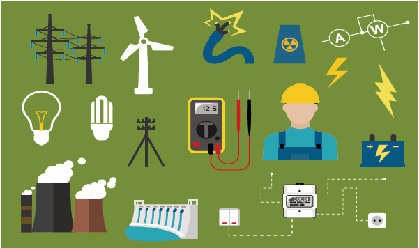
Understanding the flow of electric current and learning to draw the circuit diagram.
Understanding the difference between conventional current and electron f low.
Understanding the different types of circuit based on flow of electricity and the connection of bulbs in a circuit.
Distinguishing a cell and a battery Understanding the effects of electric current and factors affecting the effect of electric current.
Applying their knowledge in identifying the components of electrical circuits.
Understanding the discrimination between different type of circuits. Doing numerical problems and drawing the circuit diagram of their own.
In 1882, when it was sun set in the west that miracle happened in New York city. When Thomas Alva Edison gently pushed the switch on 14,000 bulbs in 9,000 houses suddenly got lighted up. It was the greatest invention to mankind. From then the world was under the light even in the night.
Many countries began using electricity for domestic purposes. Seventeen years after the New York, in 1899 electricity first came to India. The Calcutta Electric Supply Corporation Limited commissioned the first thermal power plant in India on 17 April 1899.
Around 1900s, a thermal power station was set up at Basin Bridge in Madras city and power was distributed to the government press, general hospital, electric tramways and certain residential areas in Madras. Today electricity is a common household commodity.
In your class 6, we learned about electricity and their sources. From operating factories, running medical equipments like ventilator, communications like mobile, radio and TV, drawing water to the agricultural field and light up homes electricity is important. What is electricity? We can see that. it is a form of energy, like heat and magnetism.
We have learnt that all materials are made up of small particles called atoms. The centre of the atom is called the nucleus. The nucleus consists of protons and neurtrons. Protons are positively charged. Neutrons have no charge. Negatively charged electrons revolve around the nucleus in circular orbits. Electricity is a form of energy that is associated with electric charges that exists inside the atom.
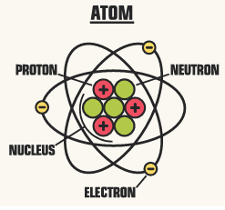
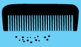
Comb your dry hair. Immediately after combing the dry hair, bring the comb closer to the bits of paper. what will you observe? When you are getting up from the plastic chair , the nylon shirt seems to be stuck to the chair and make crackling sound. What is the reason for the creation of the sound? A balloon sticks to wall without any adhesive after rubbing on your hand. Do you know the reason for all? In all the above activities, when a body is rubbed against some other body become charged. Activity ends.
Electric charge is measured in a unit called coulomb. One unit of coulomb is charge of approximately 6.242 into 10 to the power 18 protons or electrons.
Electrical charges are generally denoted by the letter 'q'.
The flow of electric charges constitute an electric current. For an electrical appliance to work, electric current must flow through it. An electric current is measured by the amount of electric charge moving per unit time at any point in the circuit. The conventional symbol for current is ‘I’ .
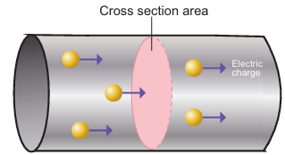
Unit of Electric Current
The S I unit for measuring an electric current is the ampere, which is the flow of electric charge across a surface at the rate of one coulomb per second.
I is equal to q by t
Where I represents current (in Ampere A)
q represents charge (in coulomb c)
t represents time taken (in seconds s).
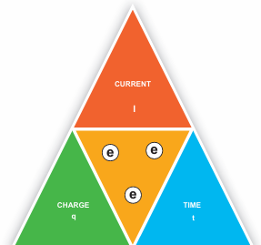
Worked example 2.1
If 30 coulomb of electric charge flows through a wire in two minutes, calculate the current in the wire?
Solution Given
Charge (q) = 30 coulomb
Time (t) = 2 minutes into 60 seconds = 120 seconds
Current I = q by t = 30 C by 120 seconds = 0.25 A.
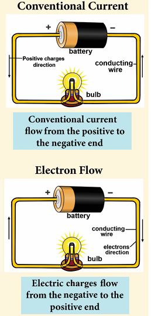
Description for the above diagram begins, in conventional current a battery is connected to a bulb by conducting wire, arrow mark indicates conventional current flow from the positive to the negative end, in the electron flow diagram arrow mark indicates electric charges flow from the negative to the positive end, description ends.
Before the discovery of electrons, scientists believed that an electric current consisted of moving positive charges.
This movement of positive charges is called conventional current.
After the electrons were discovered, it was known that electron flow actually takes place from the negative terminal to the positive terminal of the battery. This movement is known as electron flow.
Box message, Conventional current is in the direction opposite to electron flow.
Electric current is measured using a device called ammeter. The terminals of an ammeter are marked with plus and minus sign. An ammeter must be connected in series in a circuit.
Instruments used to measure smaller currents, in the milli ampere or micro ampere range, are designated as milli ammeters or micro ammeters.
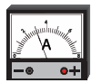
Box message
1 milliampere (m A) = 10 to the power minus 3 ampere. = 1 by 1000 ampere.
1 microampere (mieu A) = 10 to the power minus 6 ampere = 1 by 10 lakh ampere.
Worked Examples 2.2
If 0.002A current flows through a circuit, then convert the current in terms of micro ampere? Solution
Given that the current flows through the circuit is 0.002A
We know that 1 A = 10 to the power 6 mieu A
0.002A = 0.002 into 10 to the power 6 mieu A
= 2 into 10 to the power minus 3 into 10 to the power 6 mieu A
= 2 into 10 to the power 3 mieu A
0.002A = 2000 mieu A.
Electrical charges need energy to push them along a circuit.
Water always flows from higher to lower ground. Similarly, an electric charge always flows from a point at higher potential to a point at lower potential.
An electric current can flow only when there is a potential difference (V) or P.D.
Box message, The potential difference between any two points in the circuit is the amount of energy needed to move one unit of electric charge from one point to the other.
Did you ever notice the precautionary board with symbol of down ward bent arrow mark, while crossing the railway track and the electrical transformer? What does the word high voltage denotes?
The term mentioned in the board volt is the measurement for the electric potential difference. The S I unit of potential difference is volt (V). potential difference between two points is measured by using a device called voltmeter.
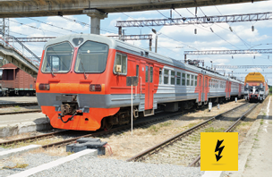
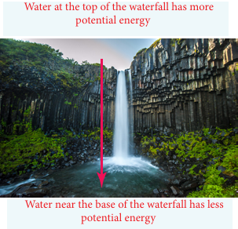
Box message, The electric current flow from the higher potential level to the lower potential level is just like the water flow.
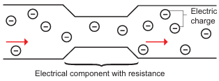
Resistance (R)
An electrical component resists or hinders the flow of electric charges, when it is connected in a circuit. In a circuit component, the resistance to the flow of charge is similar to how a narrow channel resists the flow of water.
The higher the resistance in a component, the higher the potential difference needed to move electric charge through the component. We can express resistance as a ratio.
Resistance of a component is the ratio of the potential difference across it to the current flowing through it.
R = V by I
The S I unit of resistance is ohm.
Greater the ratio of V to I, the greater is the resistance.
Electrical conductivity (sigma)
Electrical conductivity or specific conductance is the measure of a material's ability to conduct an electric current. It is commonly represented by the Greek letter σ (sigma) The S I Unit of electrical conductivity is Siemens per meter (S per m)
Electrical resistivity (row)
Electrical resistivity (also known as specific electrical resistance, or volume resistivity) is a fundamental property of a material that quantifies how strongly that material opposes the flow of electric current. The S I unit of electrical resistivity is the ohm metre (Ω m).
Material |
Resistivity (ρ) (ohm metre) at 20°C |
Conductivity (sigma) (S bar m) at 20°C |
Silver |
Resistivity of silver is 1.59 into 10 to the power minus 8 |
Conductivity of silver is 6.30 into 10 to the power 7 |
Copper |
Resistivity of copper is 1.68 10 to the power minus 8 |
Conductivity of copper is 5.98 into 10 to the power 7 |
Annealed Copper |
Resistivity of annealed copper is 1.72 into 10 to the power minus 8 |
Conductivity of annealed copper is 5.80 into 10 to the power 7 |
Aluminium |
Resistivity of aluminium is 2.82 into 10 to the power minus 8 |
Conductivity of aluminium is 3.5 into 10 to the power 7 |
An electric current is a flow of electrons through a conductor (like a copper wire). We can't see electrons, however, we can imagine the flow of electric current in a wire like the flow of water in a pipe.
Let us see the analogy of flow of electric current with the water flow.
Water flowing through pipes is pretty good mechanical system that is a lot like an electrical circuit. This mechanical system consists of a pump pushing water through a closed pipe. Imagine that the electrical current is similar to the water flowing through the pipe. The following parts of the two systems are related
• The pipe is like the wire in the electric circuit and the pump is like the battery.
• The pressure generated by the pump drives water through the pipe.
• The pressure is like the voltage generated by the battery which drives electrons through the electric circuit.
• Suppose, there are some dust and rust that plug up the pipe and slow the flow of water, creating a pressure difference from one end to the other end of the pipe. In similar way, the resistance in the electric circuit resists the flow of electrons and creates a voltage drop from one end to the other. Energy loss is shown in the form of heat across the resistor.
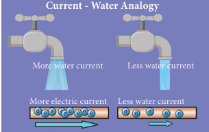
Description for the above image begins, two water taps are shown. In the first water tap more water current is flowing, below which flow of electrons are shown as more electric current. In the second water tap less water current if flowing, below which flow of electrons are shown as less electric current. Description ends.
Box message, An electric cell is something that provides electricity to different devices that are not fed directly or easily by the supply of electricity.
ACTIVITY 2 begins
Shall we produce electricity at our home?
Materials required
Zinc and copper electrodes, a light bulb, connecting wires, and fruits such as lemons, orange, apples, grapes, and bananas.
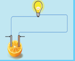
Procedure
1. Set up a circuit as shown in figure
2. Note the brightness of the blub when the circuit is connected to a lemon.
3. Repeat the experiment using the other fruits listed above. Do you notice the differences in the brightness of the bulb when it is connected to different fruits? Which fruit gives the greatest brightness? Why? (If you do not know please get the appropriate reason from your teacher)
Inference
In the above activity what makes enabled the bulb to glow. Why there is a difference in the brightness of the bulb? The reason is that the fruits which you have connected to the bulb produces the electric energy at different levels.
The sources which produce the small amount of electricity for shorter periods of time is called as electric cell or electro chemical cells. Electric cell converts chemical energy into electrical energy. Activity 2 ends.
In addition to electro chemical, we use electro thermal source for generating electricity for large scale use.
It has two terminals. When electric cells are used, a chemical reaction takes place inside the cells which produces charge in the cell.
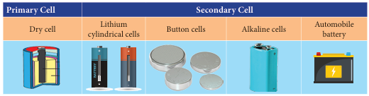
In our daily life we are using cells and batteries for the functioning of a remote, toys cars, clock, cell phone etc. Even though all the devices produce electrical energy, some of the cells are reusable and some of them are of single use. Do you know the reason why? Based on their type they are classified into two types namely primary cell and secondary cell.
Primary cell
The dry cell commonly used in torches is an example of a primary cell. It cannot be recharged after use.
Secondary cells
Secondary cells are used in automobiles and generators. The chemical reaction in them can be reversed, hence they can be recharged. Lithium cylindrical cells, button cells and alkaline cells are the other types that are in use.
ACTIVITY 3 begins.
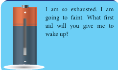
PRIMARY CELL |
SECONDARY CELL |
1. In primary cell the chemical reaction inside the primary cell is irreversible |
In secondary cell the chemical reaction inside the secondary cell is reversible |
2. primary cell cannot be recharged. |
Secondary cell can be recharged |
3. Primary cell is used to operate small devices such as, tape recorder, cycles, toys, hand torch light |
Secondary cell is used to operate devices such as mobile phones, cameras, computers, and emergency lights. |
4. Examples for primary cell are simple voltaic cell, Daniel cell, and Leclanché cell and dry cell |
Examples of secondary cells are lead accumulator, Edison accumulator and Nickel Iron accumulator. Table ends. |
A dry cell is a type of chemical cell commonly used in the common form batteries for many electrical appliances. It is a convenient source of electricity available in portable and compact form. It was developed in 1887 by Yei Sakizo of Japan.
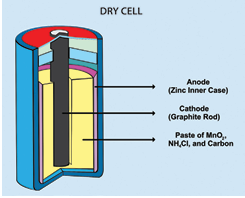
Dry cells are normaly used in small devices such as remote control for Television, torch, camera and toys. A dry cell is a portable form of a leclanche cell. It consists of zinc vessel which acts as a negative electrode or anode. The vessel contains a moist paste of saw dust saturated with a solution of ammonium chloride and zinc chloride. The ammonium chloride acts as an electrolyte.
Box message begins, Electrolytes are substances that become ions in solution and acquire the capacity to conduct electricity. Message ends.
The purpose of zinc chloride is to maintain the moistness of the paste being highly hygroscopic. The carbon rod covered with a brass cap is placed in the middle of the vessel. It acts as positive electrode or cathode.
It is surrounded by a closely packed mixture of charcoal and manganese dioxide (M n O 2 ) in a muslin bag. Here, M n O 2 acts as depolarizer. The zinc vessel is sealed at the top with pitch or shellac. A small hole is provided in it to allow the gases formed by the chemical action to escape. The chemical action inside the cell is the same as in Leclanché cell.
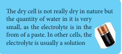
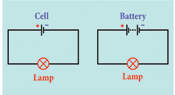
Batteries are a collection of one or more cells whose chemical reactions create a flow of electrons in a circuit. All batteries are made up of three basic components: an anode (the ‘ plus’ side), a cathode (the ‘minus’ side), and some kind of electrolyte. Electrolyte is a substance that chemically reacts with the anode and cathode.
One fateful day in 1780, Italian physicist, physician, biologist, and philosopher, Luigi Galvani, was dissecting a frog attached to a brass hook. As he touched the frog’s leg with an iron scalpel, the leg twitched.
Galvani theorized that the energy came from the leg itself, but his fellow scientist, Alessandro Volta, believed otherwise.
Volta hypothesized that the frog’s leg impulses were actually caused by different metals soaked in a liquid.
He repeated the experiment using cloth soaked in brine instead of a frog corpse, which resulted in a similar voltage. Volta published his findings in 1791 and later created the first battery, the voltaic pile, in 1800.
The invention of the modern battery is often attributed to Alessandro Volta. It actually started with a surprising accident involving the dissection of a frog.
Our country faces a shortage of electricity. So wastage of electricity means you are depriving someone else of electricity. Your electricity bill goes up. So, we must use electricity very carefully and only when it is needed. We must use the electricity as long as we need it in our house hold activities.
Can you remember what you did last year to turn the current on or off?
This time, we shall use a switch to turn the current on or off. You may have used different kinds of switches to turn your household electric appliances on or off. Switches help us to start or stop the appliances safely and easily.
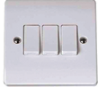
ACTIVITY 4 begins, Make your own switch.
Let us make a switch of our circuits. Take 10 cm long iron strip. Bend it twice as shown in figure. Now drive a nail into the bend of the wooden block. Nail one end of the strip to the other end of the wooden block so that its free end rests just above the first nail without touching it. Your switch is ready.
Would you like to test your switch? To do so, first set up the circuit as shown in the figure.
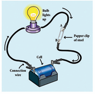
How would you use the switch to open or close the circuit.
If the bulb in your circuit glows when the metal strip of your switch is pressed on the nail and turns off when it is not, then your switch is working. The switch you made is a simple one. You may have seen many different types of switches on switchboards and appliances at your home and school. The switches are designed according to their usage, convenience and safety. But all of them work on the same principle. Switch is a mechanical component that consists of two or more terminals that are internally connected to a metal strip. Commonly used switches are listed below.
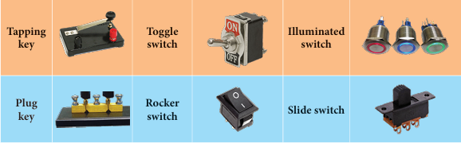
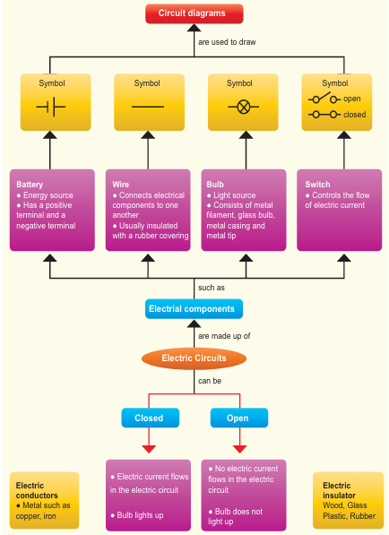
Description for the above flow chart begins, electrical components are battery, wire, bulb and switch. Battery, is energy source, it has a positive terminal and a negative terminal. The symbol for battery is two vertical T facing each other.
Wire, Connects electrical components to one another, Usually insulated with a rubber covering. The symbol of wire is a small horizontal line.
Bulb, is Light source, Consists of metal filament, glass bulb, metal casing and metal tip. The symbol for bulb is a circle and X inside the circle.
Switch, Controls the flow of electric current. The symbol of switch is one small line touching two circles for closed circuit, for open circuit, the line touches only one circle.
Electrical Circuits can be closed and open.
In Closed circuit, Electric current flows in the electric circuit and Bulb lights up.
In open circuit, No electric current flows in the electric circuit, Bulb does not light up.
Electric conductors are metal such as copper, iron.
Electric insulator are Wood, Glass Plastic, Rubber.
Description for the flow chart ends.
It is difficult to draw a realistic diagram of this circuit. The electrical appliances you use at home have even more difficult circuits. Can you draw realistic diagrams of such circuits which contain many bulbs, cells, switches and other components? Do you think it is easy? It is not easy.
Scientists have tried to make the job easier. They have adopted simple symbols for different components in a circuit. We can draw circuit diagrams using these symbols.
Symbols for bulbs, cells and switches are shown in figure.
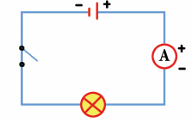
In a cell, the longer line denotes the positive ( plus symbol) terminal and the short line denotes the negative ( minus symbol) terminal. We shall use these symbols to show components in the circuits we draw. Such diagrams are called circuit diagrams.
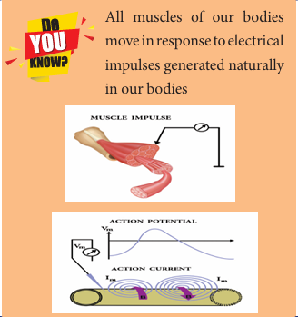
In the above experiment, we make a circuit with a bulb and a cell. We make only one kind of the circuit with a cell and a bulb. But we can make many types of circuits if we have more than one bulb or cells by connecting these components in different ways.
Two kinds of circuits can be made with two bulbs and a cell. In this experiment we shall make one of them and study it. Look at the circuit with two bulbs, and a cell and a switch given here (Figure)
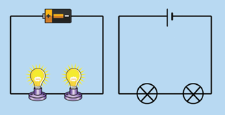
It is clear from the circuit diagram, that the two bulbs are connected one after the other. The circuit diagram shows the sequence of the bulbs and cell, not their real position. The way in which the bulbs have been connected in this circuit is called series connection.
Now make the circuit by joining the two bulbs and cell. Do both the bulbs light up? Do both glow equally bright? If one glows less bright, will it shine more brightly if we change its place in the sequence? Change the sequence of bulbs and notice.
Sometimes bulbs appear to be similar can differ from each other. So, similar looking bulb do not always glow equally bright when connected in series. The circuit can be broken at several places. For example, between the cell and the bulb, between the two bulbs etc.
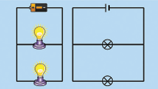
Figure shows a circuit in which two bulbs are connected in different places. This is a second type of circuit. Two bulbs in this circuit are said to be connected in parallel and such circuits are called parallel circuits.
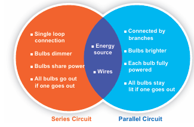
Description for the above image begins, features of series circuit are,
Single loop connection, Bulbs dimmer, Bulbs share power, All bulbs go out if one goes out.
Features of parallel circuit are, Connected by branches, Bulbs brighter, Each bulb fully powered, All bulbs stay lit if one goes out.
The common feature for both circuit is energy source and wires. Description ends.
Science to mind pricking
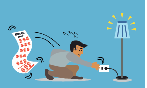
If an electrician attending an electrical fault at your home gets current shock, will you touch him in order to get rid off him from current risk? Will you use the wet stick to beat him to avoid further effects of electric shock?
Why do the electric line man are wear rubber gloves in their hands while doing electrical works on a electrical pole?
We know that all materials are made up of the basic building block, the ‘atom’. An atom, in turn, contains electrically charged particles. Many of these particles are fixed to the atoms but in conductors (such as all metals) there are lots of particles that are not held to any particular atom but are free to wander around randomly in the metal. These are called ‘free charge’.
Do you know begins, Short circuit, You might have observed the spark in the electric pole located nearby your house. Do you know the cause of this electric spark? This is due to the short circuiting of electricity along its path. A short circuit is simply a low resistance connection between the two conductors supplying electrical power to any circuit. Arc welding is a common example of the practical application of the heating due to a short circuit. Do you know ends.
Based on the property of conductance of electricity, substances are classified into two types, namely, Conductors and Insulators (or) bad conductors of electricity.
The electrons of different types of atoms have different degrees of freedom to move around. With some types of materials, such as metals, the outermost electrons in the atoms are loosely bound and they chaotically move in the space between the atoms of that material. Because these virtually unbound electrons are free to leave their respective atoms and float around in the space between adjacent atoms, they are often called as free electrons.
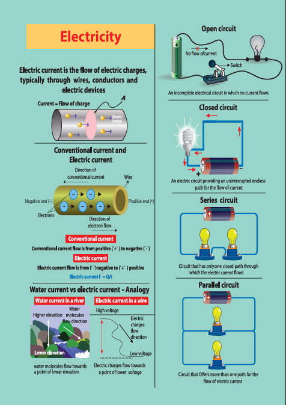
Description for the above images begins,
Image 1. Electric current is the flow of electric charges, typically through wires, conductors and electric devices. Current is flow of charge. Diagram of a wire inside which electric charges are moving.
Image 2. Diagram representing conventional current and electric current. Wire in which direction of conventional current is from positive end to negative end, and direction of electric current is from negative end to positive end.
Image 3. Water current versus electric current analogy
Water current in a river, water molecules flow from higher elevation towards a point of lower elevation. Electric current in a wire, electric charges flow from high voltage towards a point of lower voltage.
Image 4. Open circuit, in which a battery is connected one side with a switch where current flows, another side is connected to a bulb where there is no current flow.
Image 5. Closed circuit, in which both ends of a battery is connected to a bulb with a wire, uninterrupted flow of current is there.
Image 6. Series circuit. A battery is connected with two bulbs in a series, this is a circuit that has only one closed path through which the electric current flows.
Image 6. Parallel circuit, a battery is connected with two bulbs in a separate connection, circuit that offers more than one path for the flow of electric current.
Description for the images ends.
Let’s imagine that we have a metal in the form of a wire. When a voltage is connected across the ends of the metal wire, the free electrons drift in one direction.
So, a really good conductor is one that has lots of free charges while those who don’t have enough ‘free charges’ would not be good at conducting electricity or we can say that they would be ‘poor conductors’ of electricity.
Conductors are the materials whose atoms have electrons that are loosely bound and are free to move through the material. A material that is a good conductor gives very little resistance to the flow of charge (electron) on the application of external voltage. This flow of charge (electron) is what constitutes an electric current. A good conductor has high electrical conductivity in the above activity.
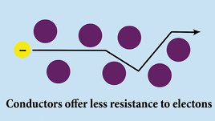
In general, more the free electrons, the better the material will conduct (for a certain applied voltage).
Those materials which don’t have enough ‘free electrons’ are not good at conducting electricity or we can say that they would be ‘poor conductors’ of electricity and they are called insulators.
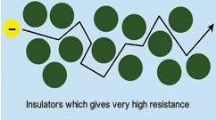
Do you know begins, This is the material used in SIM Cards, Computers, and ATM cards. Do you know by which material I am made up off?
The chip which are used in SIM Cards, Computers, and ATM cards are made up of semiconductors namely, silicon and germanium because of their electrical conductivity lies between a conductor and an insulator, do you know ends.
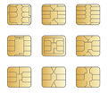
An insulator gives a lot of resistance to the flow of charge (electron). During the drift of the electrons in an object when an external voltage is applied, collisions occur between the free electrons and the atoms of the material also affect the movement of charges. These collisions mean that they get scattered. It is a combination of the number of free electrons and how much they are scattered that affects how well the metal conducts electricity. The rubber eraser does not allow electric current to pass through it. So rubber is a non-conductor of electricity. Rubber is an insulator Most of the metals are good conductors of electricity while most of the non-metals are poor conductors of electricity.
Do you know begins,
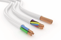
Wires made of copper, an electrical conductor, have very low resistance. Copper wires are used to carry current in households. These wires are in turn enclosed in electrical insulators, or materials of high electrical resistance. These materials are usually made of flexible plastic. Do you know ends.
You performed many experiments with electricity in Class 6 and learned quite a few interesting facts. For example, you saw that a bulb can be made to light up by making electricity flow through it. The light of the bulb is thus one of the effects of electricity. There are several other important effects of electricity. We shall study some of these effects in this chapter. There are 3 main effects of electricity as,
When an electric current passes through a wire, the electrical energy is converted to heat. In heating appliances, the heating element is made up of materials with high melting point. An example of such a material is nichrome (an alloy of nickel, iron and chromium).
The heating effect of electric current has many practical applications. The electric bulb, geyser, iron box, immersible water heater are based on this effect. These appliances have heating coils of high resistance.
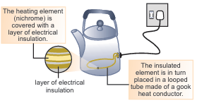
Description for the above image geyser begins, the heating element is covered with a layer of electrical insulation, the insulated element is in turn placed in a looped tube made of a good heat conductor. Description ends.
Box message, Generation of heat due to electric current is known as the heating effect of electricity.
Factors affecting Heating Effect of current
1. Electric Current
2. Resistance
3. Time for which current flows
Electric Fuse
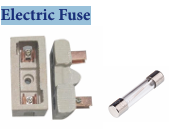
Electric fuse is a safety device which is used in household wiring and in many appliances. Electric fuse has a body made of ceramic and two points for connecting the fuse wire. The fuse wire melts whenever there is overload of the current in the wire. This breaks the circuit and helps in preventing damage to costly appliances and to the wiring. In electrical devices, a glass fuse is often used. This is a small glass tube, in which lies the fuse wire.
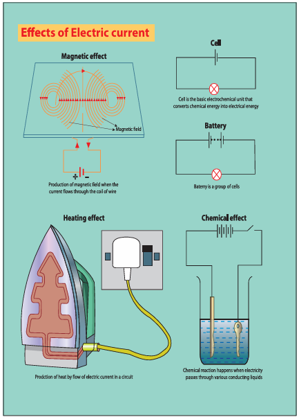
Description for the above image begins, diagram 1, magnetic field is given, production of magnetic field when the current flows through the coil of wire.
diagram 2, heating effect, diagram or iron box, production of heat by flow of electric current in a circuit.
Diagram 3, cell is the basic electrochemical unit that converts chemical energy into electrical energy.
Diagram 4, battery is a group of cells,
Diagram 5, chemical effect. Chemical reaction happens when electricity passes through various conducting liquids, it is illustrated by a diagram, a key and metal rod are dipped in a container containing liquid and both are connected to a circuit.
MCBs (Miniature Circuit Breaker)
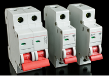
MCBs have been replacing electric fuse from wirings at most of the places. The electric fuse has a big practical problem. Whenever the wire fuses, one needs to replace the wire to resume electric supply. More often than not, this proves to be a cumbersome task. Miniature circuit breakers break the circuit automatically. One just needs to switch it on to resume the electric supply. Many models of MCBs have a built in mechanism by which the electric supply is automatically resumed.
The next effect of electric current is Magnetism. In 1819, Hans Christian Oersted discovered the electricity that has a magnetic effect. The experiment in activity-5 will help you understand the magnetic effect of electric current.
Magnetic effect of electric current has been used in making powerful electromagnets. Electromagnets are also used to remove splinters of steel or iron in hospitals dealing with eye injuries.
Electro magnets are used in many appliances that we use in our day to day life, namely, electric bell, cranes and telephone. Let us know how the magnetic effect of electric current is applied in telephones.
ACTIVITY 5, begins,
Materials required
• Iron nail
• Battery & Switch
• Wire
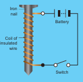
Take around 75 cm long piece of insulated flexible wire and an iron nail say about 8 to 10 cm long. Vind the wire tightly around the nail in the form of a coil. Connect the free ends of the wire to the terminals of a cell as shown. Place some pins on or near the end of the nail. Now switch on and switch off the current, What happens?
When the switch is kept in on position the pins starts to cling to the end of the nail.
When the electric current is switched off the coil generally loses its magnetism. Such coils are called as electromagnets.
The polarities of both ends of the coil changes according to the direction of electric current passes. Activity ends.
In telephones, a changing magnetic effect causes a thin sheet of metal (diaphragm) to vibrate. The diaphragm is made up a metal that can be attracted to magnets.
1. The diaphragm is attached to spring that is fixed to the earpiece.
2. When a current flows through the wires, the soft iron bar becomes an electromagnet.
3. The diaphragm becomes attracted to the electromagnet.
4. As the person on the other end of the line speaks, his voice cause the current in the circuit to change. This causes the diaphragm in the earpiece to vibrate, producing sound.
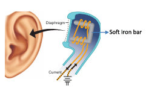
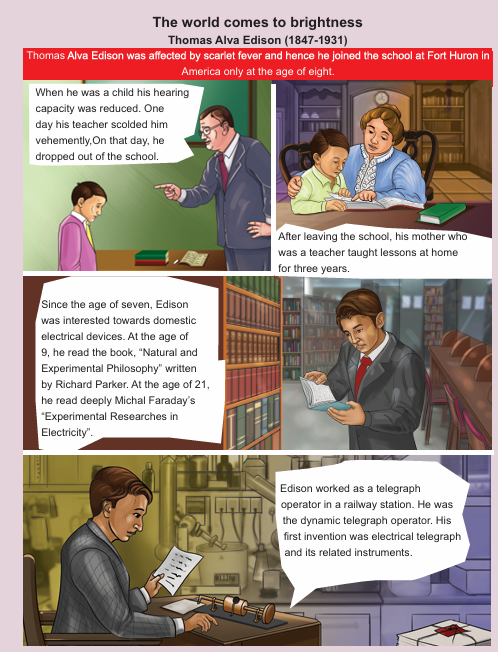
Description for the above image begins, Thomas Alva Edison 1847 to 1931.
Thomas Alva Edison was affected by scarlet fever and hence he joined the school at Fort Huron in America only at the age of eight.
When he was a child his hearing capacity was reduced. One day his teacher scolded him vehemently,
On that day, he dropped out of the school.
After leaving the school, his mother who was a teacher taught lessons at home for three years.
Since the age of seven, Edison was interested towards domestic electrical devices. At the age of 9, he read the book, “Natural and Experimental Philosophy” written by Richard Parker. At the age of 21, he read deeply Michal Faraday’s “Experimental Researches in Electricity”.
Edison worked as a telegraph operator in a railway station. He was the dynamic telegraph operator. His first invention was electrical telegraph and its related instruments.
Drawings illustrating teacher scolding Edison, mother teaching to Edison, Edison reading books are present in the image. Description ends.
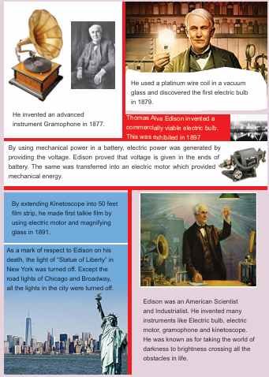
Description for the above images begins,
Edison invented an advanced instrument Gramophone in 1877. Picture of gramophone given.
Edison used a platinum wire coil in a vacuum glass and discovered the first electric bulb in 1879.
Thomas Alva Edison invented a commercially viable electric bulb. This was exhibited in 1897.
By using mechanical power in a battery, electric power was generated by providing the voltage. Edison proved that voltage is given in the ends of battery. The same was transferred into an electric motor which provided mechanical energy. Picture of electric motor is given.
By extending Kinetoscope into 50 feet film strip, he made first talkie film by using electric motor and magnifying glass in 1891.
As a mark of respect to Edison on his death, the light of “Statue of Liberty” in New York was turned off. Except the road lights of Chicago and Broadway, all the lights in the city were turned off. Picture of Statue of liberty is given.
Edison was an American Scientist and Industrialist. He invented many instruments like Electric bulb, electric motor, gramophone and kinetoscope. He was known as for taking the world of darkness to brightness crossing all the obstacles in life. Description for the images ends.
Chemical reactions happens, when electricity passes through various conducting liquids. This is known as chemical effects of electricity. You will learn chemical effect of electricity in your higher classes.
An electric current is a flow of electric charge or the amount of charge flowing through a given cross section of a material in unit time.
Conventional current is in the direction opposite to electron flow.
One ampere is defined as the flow of electric charge across a surface at the rate of one coulomb per second.
An electric cell is something that provides electricity to different devices that are not fed directly or easily by the supply of electricity.
A dry cell is a portable form of a Leclanché cell.
Batteries are a collection of one or more cells whose chemical reactions create a flow of electrons in a circuit.
The cell is the basic single electrochemical unit which converts chemical energy to electrical energy.
Ammeter, An instrument for measuring the flow of electrical current in amperes. Ammeters are always connected in series with the circuit to be tested.
Ampere (A), A unit of measure for the intensity of an electric current flowing in a circuit. One ampere is equal to a current f low of one coulomb per second.
Circuit, A closed path in which electrons from a voltage or current source flow. Circuits can be in series, parallel, or in any combination of the two.
Current (I), The flow of an electric charge through a conductor. An electric current can be compared to the flow of water in a pipe. Measured in ampere.
Fuse, A circuit interrupting device consisting of a strip of wire that melts and breaks an electric circuit if the current exceeds a safe level.
Conductor, Any material where electric current can flow freely. Conductive materials, such as metals, have a relatively low resistance. Copper and aluminium wire are the most common conductors.
Insulator, Any material where electric current does not flow freely. Insulation materials, such as glass, rubber, air, and many plastics have a relatively high resistance. Insulators protect equipment and life from electric shock.
Parallel Circuit, A circuit in which there are multiple paths for electricity to flow. Each load connected in a separate path receives the full circuit voltage, and the total circuit current is equal to the sum of the individual branch currents.
Series Circuit, A circuit in which there is only one path for electricity to flow. All of the current in the circuit must flow through all of the loads.
Short Circuit, When one part of an electric circuit comes in contact with another part of the same circuit, diverting the flow of current from its desired path.
One unit of coulomb is charge of approximately 6.242 into 10 to the power 18 protons or electrons.
The potential difference between any two points is the amount of energy needed to move one unit of electric charge from one point to the other.
Electrical conductivity or specific conductance is the measures a material’s ability to conduct an electric current.
Electrical resistivity is the property of a material that quantifies how strongly that material opposes the flow of electric current.
The sources which produce the small amount of electricity for shorter periods of time is called as electric cell or electro chemical cells.
Electrolytes, A substance that dissociates into ions in solution and acquires the capacity to conduct electricity. Sodium, potassium, chloride, calcium, and phosphate are examples of electrolytes.
1. In the circuit diagram below, 10 units of electric charge move past point x every second. What is the current in the circuit?
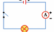
a) 10 A
b) 1 A
c) 10 V
d) 1 V
2. In the circuit shown, which switches (L, M or N) must be closed to light up the bulb?
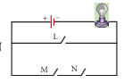
a) switch L only
b) switch M only
c) Switch M and N only
d) either switch L or switches M and N
3. Small amounts of electrical current are measured in milliampere (m A). How many milliampere are there in 0.25 A ?
a) 2.5 m A
b) 25 m A
c) 250 m A
d) 2500 m A
4. In which of the following circuits are the bulb connected in series?
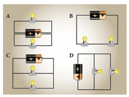
Description for the above diagram begins,
Diagram A, in a circuit battery in is in the middle, one bulb is connected on one side, another bulb is connected on another side separately.
Diagram B, Two adjacent bulbs are connected to a battery in one circuit.
Diagram C, one battery and two bulbs are connected in two separate circuit lines.
Diagram D, one battery and two bulbs are connected in two separate circuit lines, but the diagram is tilted. Description ends.
1. The direction of conventional current is dash to electron flow.
2. One unit of coulomb is charge of approximately dash protons or electrons.
3. dash is used to measure the electric current.
4. In conducting materials electrons are dash bounded with atoms.
5. S I unit of Electrical conductivity of a conductor is dash
1. Electron flow is in the same direction to conventional current flow.
2. The fuse wire does not melt whenever there is overload in the wiring.
3. In a parallel circuit, the electric components are divided into branches.
4. The representation of the electric current is A.
5. The electrical conductivity of the semiconductor is in between a conductor and an insulator.
1, Cell |
Used to open or close a circuit |
2, Switch |
Safety device used in a electric circuit |
3, Circuit |
A complete path for the flow of an electric current |
4, Miniature circuit |
Reset by hand, circuit becomes complete once again |
5, Fuse |
A device which converts chemical energy into electrical energy |
1. Water is pipe , Electric current is dash.
2. Copper is conductor, Wood is dash.
3. Length is metre scale, Current is dash.
4. milli ampere is micro ampere, 10 to the power minus 3 A is dash.
1. Assertion (A) Copper is used to make electric wires.
Reason (R) Copper has very low electrical resistance.
Option:
A. Both Assertion and Reason are true and Reason is the correct explanation of Assertion.
B. Both Assertion and Reason are true but Reason is NOT the correct explanation of Assertion.
C. Assertion is true but Reason is false.
D. Assertion is false but Reason is true. E. Both Assertion and Reason are false.
2. Assertion (A): Insulators do not allow the flow of current through themselves.
Reason (R) They have no free charge carriers.
A. both Assertion and Reason are true and the Reason is correct explanation of Assertion.
B. both Assertion and Reason are true but Reason is not a correct explanation of Assertion.
C. Assertion is true and Reason is false.
D. both Assertion and Reason are false.
1. What is the speed of electric current?
2. What is the SI unit of electrical conductivity?
3. Name the device used to generate electricity.
4. Define fuse.
5. Name some devices that run using heat effect of electric current
6. Name few insulators.
7. What is a battery?
1. Define an electric current.
2. Differentiate parallel and serial circuits.
3. Define electrical conductivity.
1. Explain the construction and working of a Telephone.
2. Explain the heating effect of electric current.
3. Explain the construction and working of a dry cell.
A student made a circuit by using an electric cell, a switch, a torch bulb (fitted in the bulb holder) and copper connecting wires. When he turned on the switch, the torch bulb did not glow at all. The student checked the circuit and found that all the wire connections were tight. What could be the possible reason for the torch bulb not glowing even when the circuit appears to be complete?
1. Three conductors are joined as shown in the diagram The current in conductor R S is 10 A. The current in conductor Q R is 6 A. What will be the current in conductor P R .
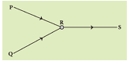
a) 4 A
b) 6 A
c) 10 A
d) 16 A
2. Draw the circuit diagram for the following series connection
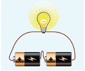
3. Study the electric circuit below. Which of the following switches should be closed so that only two bulbs will light up
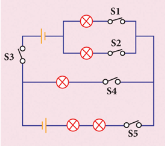
Description of above diagram begins,
Switch S1 is connected to a bulb, switch S2 is connected to another bulb, both circuits are connected a battery and another switch S3.
Again, the S1 and S2 are connected to S4, a bulb and S3.
Again, the S1, S2 is extended to S5, two bulbs and a battery and finally connected so S3. Description ends.
a) S1, S2 and S4 only
b) S1, S3 and S5 only
c) S2, S3 and S4 only
d) S2, S3 and S5 only
4. Study the three electric circuits below. Each of them has a glass rod (G), a steel rod (S), and a wooden rod (W).
In which of the electric circuits would the bulb not light up .
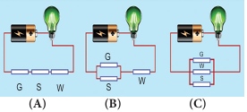
Description of the above diagrams begins,
In all the three diagrams a battery and a bulb is connected to each other
Circuit A. a glass rod, steel rod and wooden rod are connected continuously one after another, this is setup is connected to a battery and bulb on either ends.
Circuit B. glass rod and steel rod are connected as a circle, to this a wooden rod is connected, this is setup is connected to a battery and bulb on either ends.
Circuit C. glass rod, steel rod and wooden rod are kept one below one and all are connected to each other as a circle, this is setup is connected to a battery and bulb on either ends. Description ends.
a) A only
b) C only
c) A and B only
d) A , B and C.
Electricity
This activity helps the students to understand about the Parallel and series circuit.
PROCEDURE
Step 1: Type the URL link given below in the browser or scan the QR code. A page opens with a battery , some cables, two sets for circuit and two bulbs.
Step 2: Ask the students to fix the wires to the battery and the circuit.
Step 3: Let the students do it and understand the concept with different combinations.
Electricity URL
Pictures are indicative only
If browser requires, allow Flash Player or Java Script to load the page.